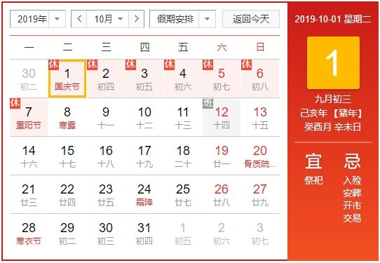

公司新闻
NEWS CENTER-
2020.01.16 滴雨公司与美国知名企业签订了商业合作计划，滴雨公司已经成为其合作伙伴。
-
2020.01.07 公司开展内部研讨会，研讨论前沿技术人工智能。
-
2019.12.17 滴雨网管系统升级
-
2019.11.06 董事长金宇航发表《发表边缘计算面面观和发展探讨》的文章
-
2019.09.30 欢度2019国庆放假
-
2019.09.16 完成滴雨边缘计算实体机安装与测试
-
2019.08.24 根据安装软件安装手册在测试环境中安装程序
-
2019.08.20 完善了滴雨边缘计算基于Ceph的软件安装手册
-
2019/03/22 完成Docker与Ceph的对接文档
-
2019/03/15 完成Docker与Kubernetes的安装手册
-
2019/03/07 完成Openstack与Ceph的对接文档
-
2019.02.25 完成Openstack安装文档
-
2019.01.25 2019春节放假通知
-
2019.01.25 公司参加上海科创基金座谈会
-
2019.01.23 Ceph安装脚本完成
-
2019.01.22 热烈祝贺滴雨软件科技(上海)有限公司正式成立
-
2019.01.21 基于Ceph的综合云平台框架确定
-
2018.12.29 公司成立仪式
滴雨公司与美国知名企业签订了商业合作计划，滴雨公司已经成为其合作伙伴。
编辑日期：2020.01.16
在物联网和边缘计算服务器方面，滴雨公司和美国知名企业公司达成协议，成为其技术合作伙伴和商业伙伴。
公司开展内部研讨会，研讨论前沿技术人工智能。
编辑日期：2020.01.07
与会人员：全体公司人员;
由金总主持会议，会议主要学习了《人工智能中国专利技术分析》，讨论人工智能以及未来十年的发展;
每个人都各抒己见，发布对与人工智能的看法与展望，以及人工智能对于以后生活的影响;
最后，金总总结了大家的观点，并激励大家，努力工作，争取站上人工智能的风口。
2019年人工智能中国专利技术分析报告
滴雨网管系统升级
编辑日期：2019.12.18
1. 重新定义网管系统，进行深度的改版。使用springboot+ thymeleaf 技术，yml来做配置，避免了大量重复编码的静态网页。
2. 外网使用nginx作为反向代理，用springboot的服务代替原有的静态网页，内网网管系统和外网网站系统使用同一套代码。
3. 将内网的各个系统的控制台网页保存下来，并制成静态网页，使浏览网站有更好的体验。
董事长金宇航撰写了《发表边缘计算面面观和发展探讨》
编辑日期：2019.11.06
滴雨软件科技（上海）有限公司董事长金宇航通过博览群书，深思熟虑，反复实践，撰写了《发表边缘计算面面观和发展探讨》
下载《发表边缘计算面面观和发展探讨》
欢度2019国庆放假
编辑日期：2019.09.30
2019年正值建国70周年。根据国务院办公厅消息公布，2019十一国庆节假期是10月1日至10月7日，共7天。其中，10月1日、10月2日、10月3日是法定假日。

公司决定放假期间： 2019/10/01 --2019/10/07
完成滴雨边缘计算实机安装与测试
编辑日期：2019.09.16
我们使用三台台式机对滴雨边缘计算大数据系统进行了测试。
硬件：
三台CPUI7，内存16G的机器，除操作系统安装硬盘外，每台还配有一块ssd硬盘，两块hdd硬盘
软件：
操作系统
CentOS：7.5
软件版本：
Java:jdk 1.8.1
Ceph:Luminous版
Hadoop: 2.7.1
Spark: 2.4
Hive：3.11
Mysql：5.7.18-1
zookeeper-3.4.10
hbase-1.2.5
OepnStack Rocky版
每台机器会建立三个OSD， 集群中的OSD分别给云计算/对象存储，云存储，大数据三块
所有存储均基于ceph
安装完毕后进行了以下测试
hadoop：TestDFSIO，mrbench，nnbench，hibench
Spark pi与 wordcount常规测试
spark-bench 测试
spark-sql 进行了tpc-ds测试
Hbase进行了PerformanceEvaluation和ycbs测试 。
根据安装软件安装手册在测试环境中安装程序
编辑日期：2019.08.24
根据安装软件安装手册在测试环境中安装程序
操作系统
CentOS：7.5
软件版本：
Java:jdk 1.8.1
Ceph:Luminous版
Hadoop: 2.7.1
Spark: 2.4
Hive：3.11
Mysql：5.7.18-1
zookeeper-3.4.10
hbase-1.2.5
OepnStack Rocky版
所有软件均能在测试环境中顺利跑通。
完善了滴雨边缘计算基于Ceph的软件安装手册
编辑日期：2019.08.20
重新修改了并完善了滴雨边缘计算基于Ceph的软件安装手册。
使文档更加易懂，更加易于安装。
完成Docker与Ceph的对接文档
编辑日期：2019/03/22
完成Docker与Ceph的对接文档，通过文档引导用户完成安装。
包括以下工作：
Docker可以通过yml文件，在Ceph的块存储mount映射到docker目录中。
完成Docker与Kubernetes的安装手册
编辑日期：2019/03/15
Docker与Kubernetes实现集群安装，并完成安装文档，通过文档引导用户完成安装。
包括:
docker-compose
docke
overlay网络
MacvlanBridge网络
OpenvSwitch建立GRE隧道
Kubernetes的安装与使用
Nginx的安装与使用
完成Openstack与Ceph的对接文档
编辑日期：2019/03/07
完成Openstack与Ceph的对接文档，通过文档引导用户完成安装。
包括以下工作：
Glance组件提供镜像服务，将Image直接存储在Ceph的块存储中。
Nova组件，一个虚机的创建必然需要操作系统，也就少不了系统盘，系统盘使用Ceph块存储服务提供。
Cinder组件提供块存储服务，以通过Ceph块存储服务来提供。
完成Openstack安装文档
编辑日期：2019/02/25
openstack实现集群安装，并完成安装文档，通过文档引导用户完成安装。
包括:
Identity(Keystone)模块
Compute(Nova)模块
DashBoard(Horizon)
Block Storage(Cinder)
Network(Neutron)
Image Service(Glance)
Object Storage(Swift) 由Ceph的对象存储替代.
所有功能的安装和配置。
相关链接
欢度2019春节
编辑日期：2018/01/30
百节年为首，春节是中华民族最隆重的传统佳节。2019年春节即将到来，在那天，全国各地都会举行各种庆贺新春活动，热闹喜庆气氛洋溢。大家在浓厚的年节氛围里，享受团圆的喜悦。
公司决定放假期间： 2019/02/03 --2019/02/12
取得预期效果，扩大了影响力，获得关注
编辑日期：2018/01/25
公司参加上海科创基金座谈会，取得预期效果，扩大了影响力，获得关注

Ceph安装脚本完成
编辑日期：2019/01/23
Ceph实现集群自动化安装，这是一键式安装系统，通过交互式的界面引导用户完成系统所有功能的安装和配置
热烈祝贺公司正式成立
编辑日期：2019/01/22
滴雨软件科技(上海)有限公司于2019年1月22日正式成立了。

Ceph平台框架确定
编辑日期：2019/01/21
公司初创人员经过前期的努力，已确定CEPH为基础平台和集群，进而把OPENSTACK的云计算进行无缝整合，同时建立开放的存储平台，大数据平台最后成功替换了HADOOP的HDFS文件系统。
预祝公司成立
编辑日期：2018/12/29
滴雨软件科技公司进入审批流程，获各方关注
滴雨公司是一家新创的高科技软件公司，致力于云平台的建设和提供，我们认为在全球的私有云，公有云，混合云的建设中，是细分市场的，同时云计算，云服务，云存储，大数据，物联网，智能平台，灾备份，云搜索的各种开源产品有种多的种类和体系，各大公司的低层平台也是有较大的差别，用户在虚拟云上看不到低层的东西，又没有能力建立全面的统一的私有云方案。如果能对这些技术做融合，并提供一键式的安装和图形化的维护，相信有一部份用户和企业会有自已的私有云方案。我们的商务模式是提供免费的各种平台和统一的平台，仅对一些数据迁移，应用开发有服务的部份作有偿服务。
所有的技术，如果用户能象安装普通软件一样一键安装，这就类似于思科提出的雾计算概念，滴雨公司称之为露计算， DEW Cloud Technology,或者这种方案才称之为真正的雾计算时代的到来。
这也是一种新生态。